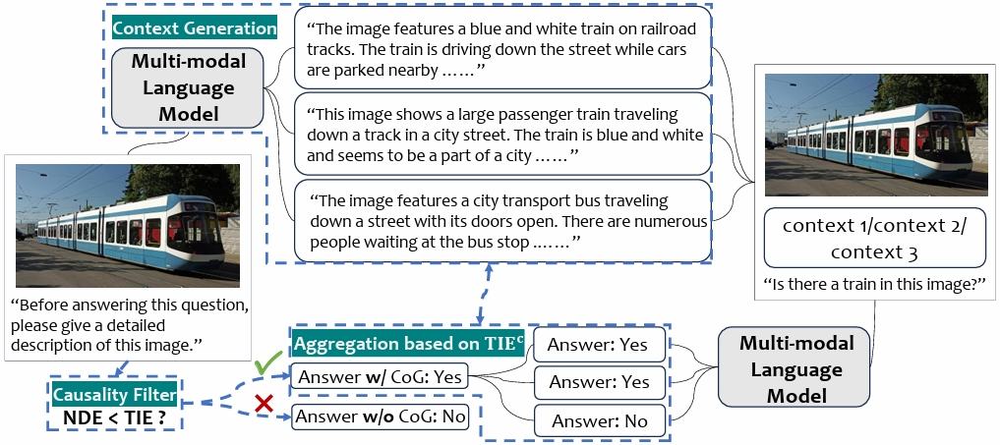
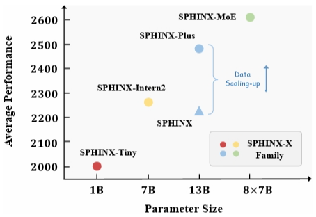
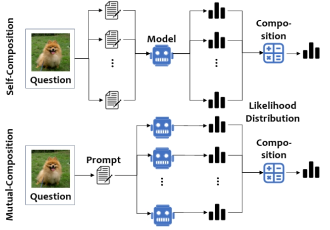
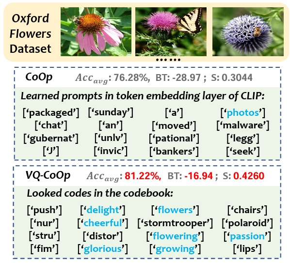
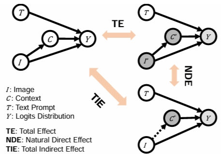

|
Application: I am currently in the process of applying for a PhD program in Artificial Intelligence for 2025fall. If you are also applying or are interested in talking about research, please do not hesitate to contact me! I am more than happy to connect and share insights.
|
Research
My interest lies on generative models, with a particular focus on multi-modal language models and diffusion models. I find it more compelling to consider large language models (LLMs) and latent diffusion models (LDMs) from the perspective of energy-based models (EBMs). The essence of generative modeling is to capture the underlying distribution or rules of our world. As such, the inherent knowledge embedded within these models serves as an excellent foundation for downstream tasks.
|
|
News
[May 2024] Give a talk of Causal-CoG at CCVL's group meeting.
[April 2024] Causal-CoG is accepted by CVPR 2024 as Poster (Highlight, top 2.8%).
[Dec. 2023] Join Shanghai AI Lab as a research intern.
Last updated: 2024/7/9.
|
|

|
Causal-CoG: A Causal-Effect Look at Context Generation for Boosting Multi-modal Language Models
Shitian Zhao,
Zhuowan Li,
Yadong Lu,
Alan Yuille,
Yan Wang
CVPR (Poster Highlight, top 2.8%), 2024
arXiv /
code
|
|

|
SPHINX-X: Scaling Data and Parameters for a Family of Multi-modal Large Language Models
Peng Gao*,
Renrui Zhang*,
Chris Liu*,
Longtian Qiu*,
Siyuan Huang*,
Weifeng Lin*,
Shitian Zhao,
Shijie Geng,
Ziyi Lin,
Peng Jin,
Kaipeng Zhang,
Wenqi Shao,
Chao Xu,
Conghui He,
Junjun He,
Hao Shao,
Pan Lu,
Hongsheng Li,
Yu Qiao
ICML, 2024
arXiv /
code
|
|

|
Unleashing the Potentials of Likelihood Composition for Multi-modal Language Models
Shitian Zhao,
Renrui Zhang,
Xu Luo,
Yan Wang,
Shanghang Zhang,
Peng Gao
Submitted, 2024
|
|

|
CLIP with Vector-Quantized Prompts for Continual Learning
Shitian Zhao,
Yadong Lu,
Xingran Xie,
Qingli Li,
Yan Wang
Submitted, 2023
|
|

|
Prompting Universal Model for CT Image Segmentation from a Causal Perspective
Boxiang Yun,
Shitian Zhao,
Qingli Li,
Alex Kot,
Yan Wang
Submitted, 2024
|
|
{kind=link}